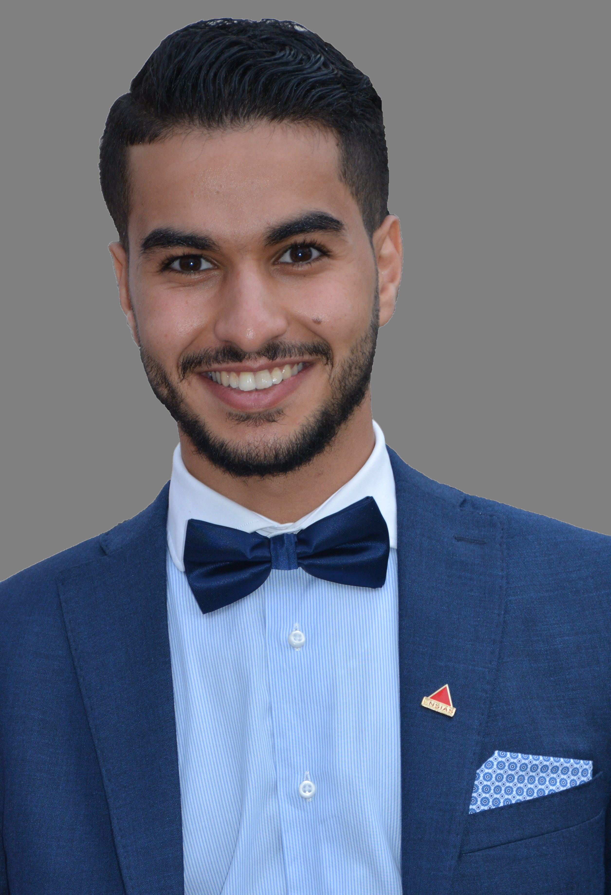

aproposDeMoi
Bonjour Madame, Monsieur,
Je suis Abdelmounaim BOUGAZE, étudiant en troisième année de l’Ingénierie du Web et Informatique Mobile (IWIM), option Intelligence du web à l’Ecole Nationale Supérieure d’Informatique et d’Analyse des Systèmes (ENSIAS).
Je suis actuellement en stage de projet de fin d’étude d'une durée de six mois depuis février 2020.
Ma formation à l’ENSIAS traite une multitude de problématiques informatiques et est centrée sur des projets qui ont renforcé mon esprit d’équipe et développé mes méthodes de résolution de problèmes.
Dynamique et doté du sens de l’initiative, je suis prêt à m’investir et à mettre en pratique les enseignements théoriques que j'ai reçu.
Je suis Abdelmounaim BOUGAZE, étudiant en troisième année de l’Ingénierie du Web et Informatique Mobile (IWIM), option Intelligence du web à l’Ecole Nationale Supérieure d’Informatique et d’Analyse des Systèmes (ENSIAS).
Je suis actuellement en stage de projet de fin d’étude d'une durée de six mois depuis février 2020.
Ma formation à l’ENSIAS traite une multitude de problématiques informatiques et est centrée sur des projets qui ont renforcé mon esprit d’équipe et développé mes méthodes de résolution de problèmes.
Dynamique et doté du sens de l’initiative, je suis prêt à m’investir et à mettre en pratique les enseignements théoriques que j'ai reçu.

CompétencesTechniques
Méthodes de conception :
+Merise
+UML
Méthodes agiles :
+Scrum
+eXtreme Programing
Langages de programmation :
+C +JAVA +Python
+Java Script +Dart +C#
Développement Web :
+PHP / Symphony
+JEE / JSF
+HTML / CSS
+React.js +Angular.js
+ASP .net
Développement mobile :
+SDK android
+Java / XML
+React native
+Flutter
Data mining :
+KNN
+ID3
+k-means
+réseaux de neurones
Sécurité :
+Sécurité des systèmes et des réseaux (concepts de base)
+Cryptographie
Big Data :
+Hadoop
Administration des systèmes :
+windows
+linux
Langues
Arabe
Natale
Français
Bilingue
Anglais
Professionnel
Centres d'intérêts
Sports
Arts martiaux (taekwondo)
Football
Autres
Musique
Cinéma
Technologies